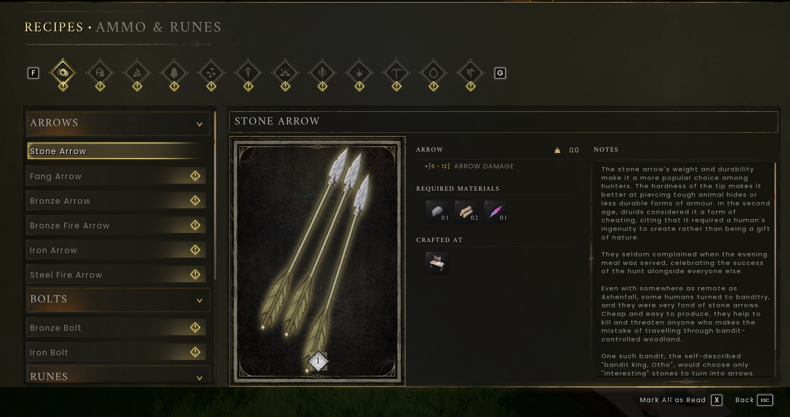

Crafting guide
Turn what you gather into equipment, supplies and a reason to explore further.
On this page
Controls for this walkthrough
Interact E · Inventory Tab · Map M / J · Build B
Full controls and menu navigation · * marks a controller-equivalent mapping; the in-game prompt takes priority.
Start at the right workstation
Open Build mode and place a Crafting Table where you have permission, or use the camp’s existing one. Interact with it, select a category and inspect the item. Its recipe shows what you need; the craft control creates it when the requirements are met.

Read a recipe backwards
- Choose the finished item you need. Check that it suits your current goal.
- Write down the missing ingredients. Separate raw materials from processed materials.
- For each processed ingredient, find its own recipe and workstation.
- Gather the missing raw materials, process them, then return to the final station.
- Craft a small amount first. Check the result before spending the group’s entire stock.
Workstation planner
| Need | Look for | Beginner advice |
|---|---|---|
| Starter tools and equipment | Crafting Table | Read the item category and ingredient panel. |
| Cooked supplies | Campfire / cooking facilities | Check input, fuel and output before leaving. |
| Smelted metal | Furnace | Match the bar recipe and fuel requirements. |
| Metal equipment | Blacksmith’s Bench | Bars may be only part of the recipe. |
| Fabric and thread | Spinning / weaving facilities | Trace the ingredients back to their raw source. |
| Runes | Rune Altar | Make the specific types your spell consumes. |
Not every recipe belongs at the basic table. If an item is missing, consult your Journal or the wiki for its station and unlock requirements.
Cooking and clean supplies

Choose the intended input, add appropriate fuel and start cooking. Collect the output before heading off. Keep raw ingredients separate from ready-to-use supplies so you do not accidentally leave camp with a bag of uncooked food.
Repair before replacing
Durability measures wear. Inspect your gear and repair at the appropriate facility rather than immediately making another copy. Read the repair cost before confirming; a trip may need both gathering supplies and repair materials.


Recipes and workshop planning
Search 629 recipes and calculate batch materials. You can filter by workstation or search an ingredient to find uses for spare supplies.
Compare workstation build costs, unlocks and placement rules.
Further reading
For exact requirements, detailed walkthroughs and more depth, visit the topic pages below.
Wiki adaptations and data: RuneScape: Dragonwilds Wiki contributors, CC BY-NC-SA 3.0. See credits for source dates.